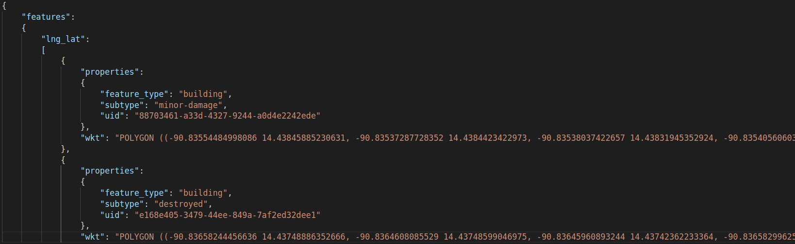

Using imagery from Maxar's Open Data Program, the dataset boasts over 850 000 building polygons from six different types of natural disaster around the world, covering a total area of over 45,000 square kilometers, being one of the largest and highest quality public datasets of annotated high-resolution satellite imagery.
For more information please read xBD: A Dataset for Assessing Building Damage from Satellite Imagery.
Each image has an associated JSON file containing an array. Each array element contains metadata, information regarding the type of damage assesed and an string array of polygon coordinates for the bounding polygon, as seen below:
In order to download the dataset, you first need to create an account on the official website. After that you will be redirected to a webpage with the download link.
No official model has been found for this dataset.
No official benchmarks have been found for this dataset. The challenge results are not public yet either.
This dataset is associated with the Localize and Score Damage challenge. You need to create an account and log in on the official website in order to view challenge details.
Dataset licenced under a Non-Commercial licence.